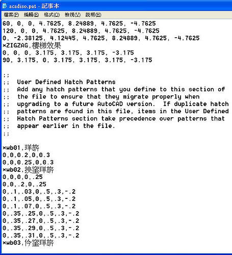
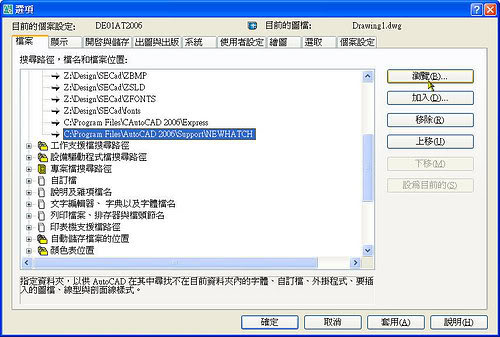

AutoCAD 本身所提供的剖面線樣式儲存在 acad.pat(英制剖面線樣式)和 acadiso.pat(公制剖面線樣式)文字檔中。

依照「測量單位」的不同，而使用不同的 剖面線樣式檔。
而在各版本的 剖面線樣式檔 也有些許的變更，以AutoCAD 2000 及 AutoCAD 2007 來比較，2007 有新增一組 GRAVEL 剖面線樣式檔。
而依照使用者自訂剖面線樣式，您可以將各種剖面線樣式定義加入此檔案(acad.pat、acadiso.pat)，也可以自行建立獨立的剖面線樣式檔。
※※※ 自訂概述 ※※※
1..使用者自訂編寫在原始剖面線樣式檔(acad.pat、acadiso.pat)，用筆記本開啟後將語法寫在檔案的最下方。

2.若是下載的 AutoCAD 剖面線樣式檔(acad.pat、acadiso.pat)，建議還是先把原始「剖面線樣式檔」備份起來，再將檔案覆蓋過去即可。
C:\Documents and Settings\使用者帳號\Application Data\Autodesk\AutoCAD 版本\版本代號\cht\Support
˙之後使用 剖面線 HATCH指令時，則會在「剖面線樣式選項板」→「其他預先定義的」看到新的剖面線樣式。

1..使用者自訂 建立獨立的「剖面線樣式檔」，這時候可以把「剖面線樣式檔」放置在系統本身的 支援檔案搜尋路徑，
請在「選項」對話方塊的「檔案」標籤中設定。
2.新增資料夾，再加入一組 支援檔案搜尋路徑，方便日後對自訂 建立獨立的 剖面線樣式檔管理。

3.把「剖面線樣式檔」放在此資料夾
C:\Program Files\AutoCAD 2006\NEWHATCH

4.之後使用 剖面線 HATCH指令時，則會在「剖面線樣式選項板」→「自訂」看到新的剖面線樣式。

註：有自行下載或自行編寫之獨立「填充線PAT」，其「填充線檔名」及「填充線樣式名稱」需一致，才可以正常使用。
----------------------------------------------------
「剖面線樣式選項板」對話方塊
[ANSI] 顯示產品隨附的所有 ANSI 樣式。
[ISO] 顯示產品隨附的所有 ISO 樣式。
[其他預先定義的] 顯示產品隨附的 ANSI 和 ISO 之外的所有樣式。
[自訂] 顯示已加入至搜尋路徑 (在「選項」對話方塊的「檔案」標籤中設定) 的自訂 PAT 檔列示。
資料來源:AutoCAD 2006 說明
「教學」剖面線之基本運用
https://www.autocad-tw.com/t36-topic
「教學」剖面線之進階操作